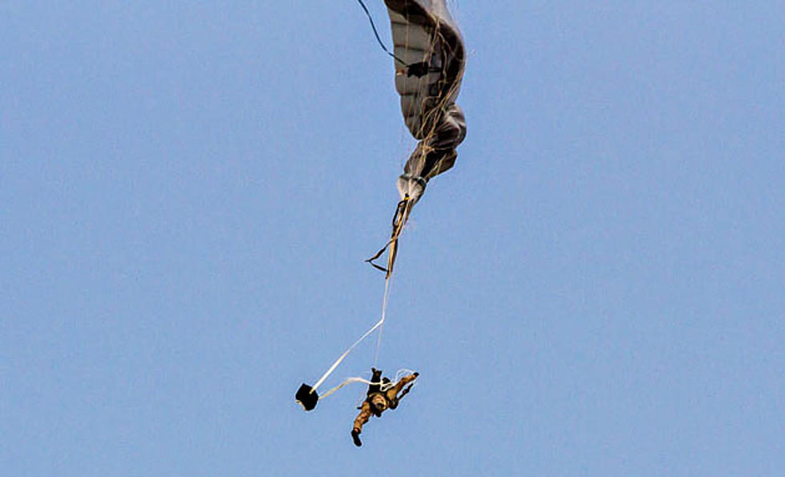

This is a secure portal for accessing audited operational and incident data from Kshitej's platforms.
Parachute Deployment Success Rate
Anomaly Occurrence Rate
System Integrity Rating

Date: 2025-04-05 | System: Parachute Demo Drop – IAF Akash Ganga Unit
Incident Summary: During a scheduled demonstration jump in Agra, a Para Jump Instructor from the IAF’s Akash Ganga Skydiving Team sustained critical injuries after a hard landing. Despite successful canopy deployment, the instructor succumbed to injuries during medical care.
Cause Analysis: Preliminary findings suggest aerodynamic instability induced by crosswind shear during descent. The parachute deployed correctly, but control input response was delayed due to minor line twist during flare phase.
Action Taken: Immediate suspension of all demonstration jumps pending safety audit. Wind condition monitoring protocol has been updated to include real-time telemetry feedback and auto-abort thresholds for drop-zone gust speeds above 22 knots.
Impact: No civilian or equipment loss reported. Internal review committee initiated a detailed technical and procedural audit to enhance safety redundancy for future training ops.
Download Full Report (Secure Access)
Date: 2025-03-29 | System: VayuNet Module T4
Incident Summary: During a high-G maneuver simulation, the primary telemetry link experienced signal degradation, resulting in a 4.5-second data outage. Backup systems maintained GPS and altitude tracking.
Failure Cause Analysis: Root cause traced to a transient 20ms power spike in the RF unit due to an unshielded capacitor on the power bus. Confirmed to be a hardware, not software, anomaly.
Action Taken: All operational modules received immediate hardware revision (Rev 1.1) with improved shielding and power regulation. No mission loss recorded.
Download Full Log Report (Secure)